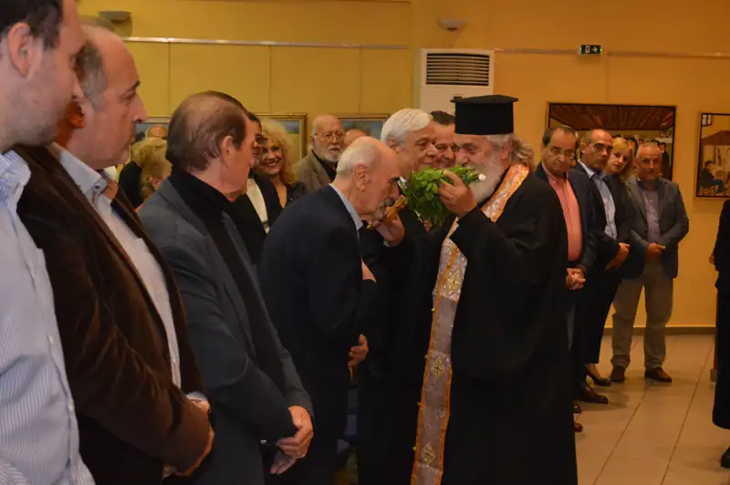
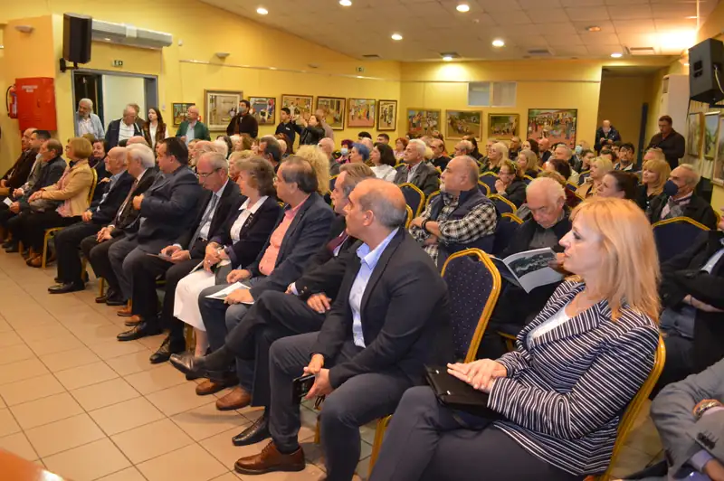
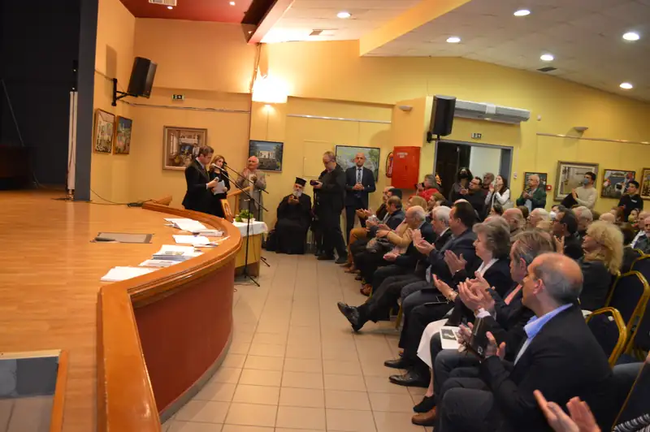
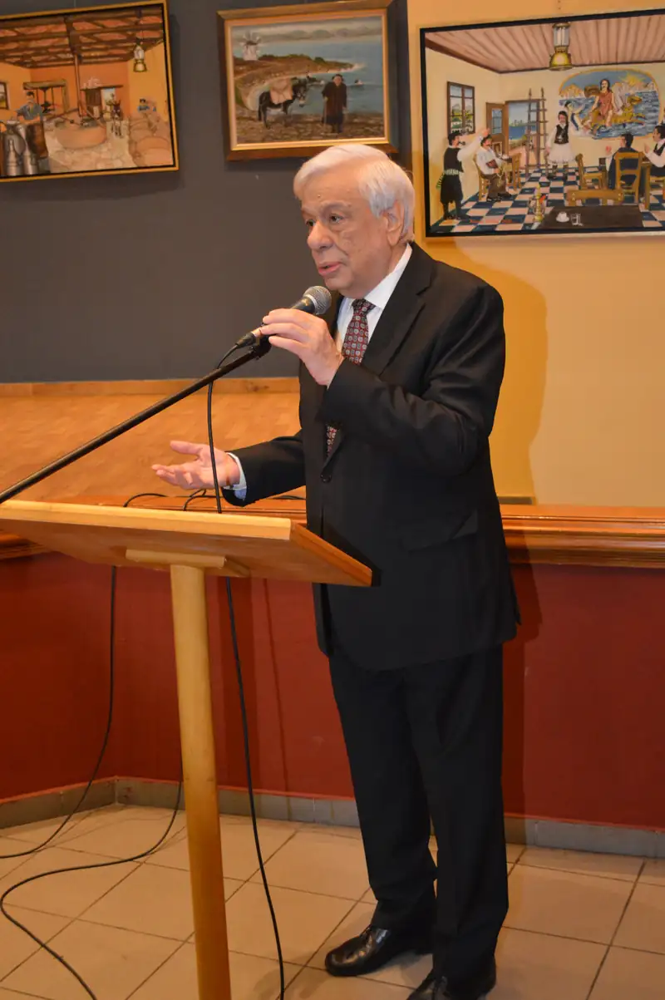
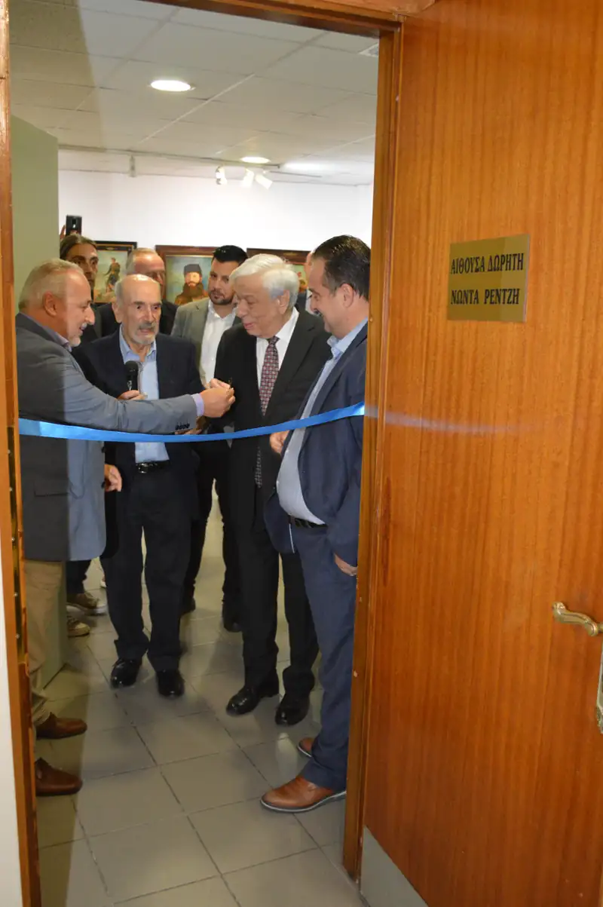
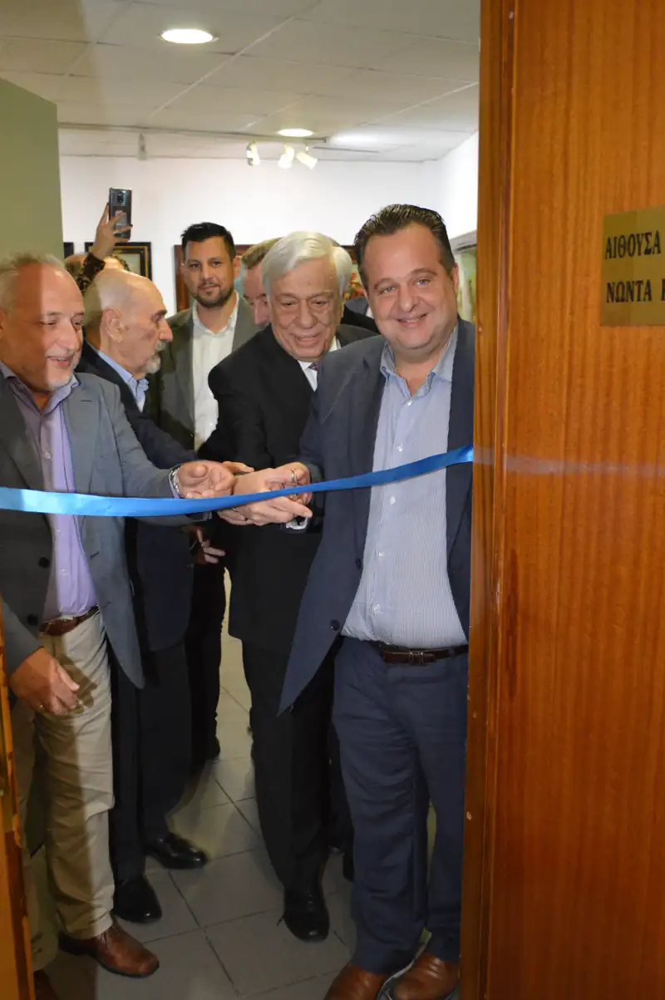
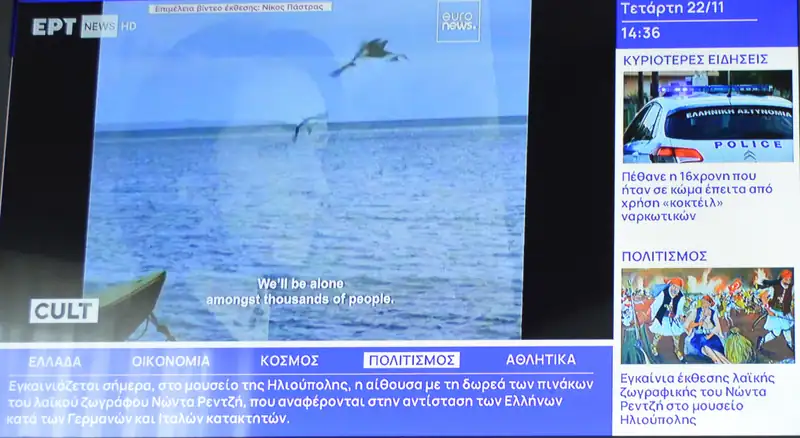
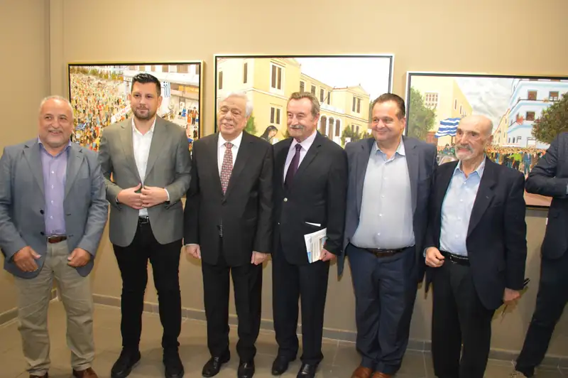

ΕΚΘΕΣΗ: ΜΟΥΣΕΙΟ ΕΘΝΙΚΗΣ ΑΝΤΙΣΤΑΣΗΣ
Στο ΜΟΥΣΕΙΟ ΕΘΝΙΚΗΣ ΑΝΤΙΣΤΑΣΗΣ, με έργα που αναφέρονται στην αντίσταση των Ελλήνων κατά των Γερμανών και των Ιταλών.

Στα εγκαίνια της έκθεσης παρευρέθηκαν ο τ. Πρόεδρος της Δημοκρατίας κ. Προκόπιος Παυλόπουλος, ο αιδεσιμότατος πατέρας Μιχαήλ, ο αρμόδιος καθηγητής του ΕΚΠΑ για την τέχνη Δημήτρης Παυλόπουλος, οι Δήμαρχοι Ηλιούπολης Γιώργος Χατζηδάκης, ο επόμενος Δήμαρχος κ. Στάθης Ψυρρόπουλος, ο Δήμαρχος Θέρμου Σπύρος Κωσταντάρας, η Πρόεδρος του επόμενου Δημοτικού συμβουλίου κ. Δήμητρα Κορμά, ο τ. Δήμαρχος Ηλιούπολης Θεόδωρος Γεωργάκης, οι αντιδήμαρχοι κ. Κωνσταντίνος Σεφτελής, Γιάννης Αντζινάς, Σταύρος Γεωργάκης, Χρίστος Καλαρρύτης, ο αντιπρόεδρος του μουσείου Δημήτρης Πανταζόπουλος, ο Δημοσιογράφος της ΕΡΤ Γιώργος Καριωτάκης, το προεδρείο της ΕΓΕ Κατωμελήτη Ελένη και Μουκασίρη Χάιδω, ο Πρόεδρος της ένωσης λογοτεχνών και καλλιτεχνών Ηλιούπολης κ. Στέλιος Μαρούλης, το προεδρείο του Ροταριανού Ομίλου Ηλιούπολης, η πρόεδρος της Ιωνικής Πολιτιστικής Στέγης κ. Αργυρώ Πίκουλα, η Πρόεδρος της επιτροπής για τους εορτασμούς του 1821 κ. Κατερίνα Μαρκουλάκη, ο Πρόεδρος της Πανελλήνιας Κινηματογραφικής Λέσχης κ. Δημήτρης Καλαντίδης, ο γραμματέας της Φιλολογικής Στέγης Πειραιά κ. Σταύρος Τζώρτζος, Πρόεδροι Δημοτικών παρατάξεων και πολλοί Δημοτικοί σύμβουλοι, άνθρωποι της τέχνης και του πολιτισμού, καθώς και μεγάλο πλήθος Ηλιουπουλιτών.
Για τον ζωγράφο μίλησαν, ο καθηγητής Ιστορίας της Τέχνης του ΕΚΠΑ κ. Δημήτρης Παυλόπουλος και ο τ. Πρόεδρος της Δημοκρατίας Προκόπιος Παυλόπουλος.
Την έκθεση επιμελήθηκαν ο Μουσειολόγος κ. Γιώργος Μαστρογιάννης και η Εικαστικός κ. Δήμητρα Τριανταφυλλοπούλου.








